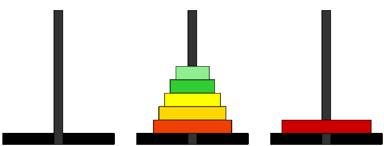

C5 R√©cursivit√© ¶
"In order to understand recursion, one must first understand recursion.
"
Cours¶
Attention
Ce diaporama ne vous donne que quelques points de repères lors de vos révisions. Il devrait être complété par la relecture attentive de vos propres notes de cours et par une révision approfondie des exercices.
Travaux dirig√©s¶
Travaux pratiques¶
Note
Pour les exercices qui suivent, lorsque cela est possible (donc lorsqu'on ne traite pas de tableaux), on pourra proposer une implémentation en OCaml en s'inspirant des exemples vus en cours.
 Exercice 1 : Somme des √©l√©ments d'un tableau¶
Exercice 1 : Somme des √©l√©ments d'un tableau¶
-
Ecrire une fonction itérative
somme_iterqui prend en argument un tableau d'entiers et sa taille entier \(n\) et renvoie la somme des élements de ce tableau. -
On note \(S(n)\) la somme des éléments du tableau jusqu'à l'indice \(n\). Ecrire une relation de récurrence entre \(S(n)\) et \(S(n-1)\).
-
Donner une version récursive de la fonction
somme. -
Ecrire une fonction récursive terminale.
Aide
Pour cet exercice, on pourra s'inspirer de la fonction factorielle vue en cours et dont on donne les différentes versions ci-dessous :
Exercice 2 : Chateau de cartes¶
Un château de cartes est un échafaudage de cartes à jouer. On a représenté ci-dessous des chateaux de cartes à 1, 2 et 3 étages (crédit : DREAMaths):

-
On note \(c_n\) le nombre de cartes nécessaires pour construire un chateau de cartes à \(n\) étages. Etablir une relation de récurrence entre \(c_n\) et \(c_{n-1}\).
-
Ecrire (dans le lange de votre choix) une fonction récurrente qui renvoie \(c_n\) pour la valeur \(n\) fournie en argument .
-
Calculer \(c_{100}\) à l'aide de votre programme. Vous pouvez vérifier le résultat fourni par votre programme ci-dessous :

-
Retrouver ce résultat par le calcul
Exercice 3 : Additions et soustractions¶
On suppose qu'on ne dispose que de deux opérations : ajouter 1 ou retrancher 1.
- Écrire à l'aide de ces deux opérations, une version itérative de l'addition de deux entiers.
- Même question avec une version récursive.
Exercice 4 : Maximum r√©cursif¶
-
Ecrire une fonction
max2qui prend en argument deux entiers et renvoie le maximum de ces deux entiers. -
Ecrire une fonction récursive  
maximumqui prend en argument un tableau d'entiers (et sa taille) et renvoie le maximum des éléments de ce tableau.
Exercice 5 : Retourner une chaine de caract√®res¶
-
Ecrire une fonction
retournequi prend en argument une chaine de caractèreset renvoie une chaine de caractères contenantsécrite à l'envers. Par exemple sichar test[]="Bonjour", alorsretourne(s)renvoie la chaineruojnoB. -
On décompose une
chaineenchaine = debut + dernier caractère, compléter la définition récursive suivante :envers(chaine) = .......... + envers(.......) -
En déduire une version récursive de la fonction
enversAide
On pourra écrire au préalable une fonction
debut(chaine)qui renvoie la chaine privée de son dernier caractère.
Exercice 6 : Algorithme d'Euclide de calcul du pgcd¶
- Revoir si besoin l'algorithme d'Euclide permettant de calculer le pgcd de deux entiers.
- Donner une implémentation itérative de cet algorithme
- Donner une implémentation récursive de cet algorithme
Exercice 7 : Recherche dichotomique dans un tableau tri√©¶
L'algorithme de recherche dichotomique, s'applique lorsque le tableau est trié, il consiste à comparer l'élément cherché avec celui situé au milieu du tableau. Si la comparaison est infructueuse, on relance la recherche dans la moitié de tableau pertinente, ainsi à chaque étape, la taille de la zone de recherche est divisée par deux.
Par exemple, si on recherche \(\textcolor{red}{28}\) dans \([14, 15, 17, 22, 23, 25, 29, 34, 38]\), le tableau ci-dessous représente les étapes de la méthode :
| Etape | Zone de recherche | Milieu | Comparaison |
|---|---|---|---|
 |
\(\underbrace{[\overset{\textcolor{red}{_\wedge^{0}}}{14}, 15, 17, 22,}_{ } \underset{_4^\uparrow}{\textcolor{darkblue}{23}} , \overbrace{25, 29, 34, \underset{\textcolor{red}{_8^{\vee}}}{38}]}_{ }\) | \((0+8)/2 = 4\) | \(\textcolor{darkblue}{23} <\textcolor{red}{28}\) |
 |
\([\colorbox{lightgray}{14, 15, 17, 22,23} , \underbrace{\overset{\textcolor{red}{_\wedge^{5}}}{25}} \underset{_6^\uparrow}{\textcolor{darkblue}{29}}, \overbrace{34, \underset{\textcolor{red}{_8^{\vee}}}{38}]}_{ }\) | \((5+8)/2=6\) | \(\textcolor{darkblue}{29} \geq \textcolor{red}{28}\). |
 |
\([\colorbox{lightgray}{14, 15, 17, 22,23} , \underset{_5^\uparrow}{\overset{\textcolor{red}{_\wedge^{5}}}{25}}, \underset{\textcolor{red}{_6^{\vee}}}{29} \colorbox{lightgray}{34,38}]\) | \((5+6)/2=5\) | \(\textcolor{darkblue}{25} < \textcolor{red}{28}\). |
 |
\([\colorbox{lightgray}{14, 15, 17, 22,23,25} \underset{\textcolor{red}{_6^{\vee}}}{\overset{\textcolor{red}{_\wedge^6}}{29}} \colorbox{lightgray}{34,38}]\) | - | - |
Arrêt de l'algorithme, \(28\) n'est pas dans la liste.
-
Ecrire en langage C une implémentation récursive de cet algorithme sous la forme d'une fonction de signature
int dichotomie(int tab[], int v, int debut, int fin)qui recherche dans le tableautab, la valeurven se limitant à la zone de recherche comprise entredebutetfin(inclus). Initialement, on a doncdebut=0etfinégale à la taille du tableau -1. Cette fonction renvoie-1si l'élément ne se trouve pas dans le tableau et sinon un indiceitel quetab[i]soit la valeur cherchée. -
Proposer un jeu de tests pour votre fonction sous la forme d'instructions
assert. -
Ecrire une version itérative de la recherche dichotomique.
Exercice 8 : Pair et impair¶
On définit les fonctions pair et impair de façon mutuellement récursive de la façon suivante :
- l'appel
pair(0)renvoietrueet l'appelpair(n)renvoieimpair(n-1)pourn > 0 -
l'appel
impair(0)renvoiefalseet l'appelimpair(n)renvoiepair(n-1)pourn>0 -
Donner une implémentation en C de ces deux fonctions.
-
Donner une implémentation en OCaml de ces deux fonctions.
Exercice 9 : Chiffres romains¶
En numération romaine, les nombres s'écrivent avec les symboles suivants :
- I valant 1
- V valant 5
- X valant 10
- L valant 50
- C valant 100
- D valant 500
- M valant 1000
On lit un nombre de la gauche vers la droite, si la valeur d'un symbole est inférieure à celle du suivant alors on retranche sa valeur du total, sinon on l'ajoute. Par exemple, XIV vaut 14 car la valeur du I doit être retranchée (car inférieure à celle de V).
-
Ecrire une fonction de signature
int valeur_symbole(char s)qui renvoie la valeur du symbole donné en argument.Note
On peut utiliser une suite de
ifimbriqués ou alors unswitch(mais qui n'est pas au programme de MP2I). -
Ecrire une fonction récursive de signature
int valeur(char s[])qui renvoie la valeur du nombre romainssdonné sous la forme d'une suite de caractères.
Exercice 10 : M√©lange de Fisher-Yates¶
Le mélange de Fisher-Yates est un algorithme permettant de générer une permutation aléatoire d'un tableau à \(n\) éléments. Il consiste à parcourir le tableau de la fin vers le début, en échangeant l'élément aléatoirement avec un de ceux qui le précède. c'est-à-dire que pour l'indice \(i\) variant de \(n-1\) à 1 on échange tab[i] avec tab[j] où \(j\) est choisi aléatoirement entre \(0\) et \(i\).
-
Proposer une version itérative de cet algorithme
-
Proposer une version récursive de cet algorithme
Aide
On pourra passer en argument en plus du tableau l'indice \(i\).
Exercice 11 : Dessin r√©cursif¶
Attention
L'exercice suivant utilise le module turtle déjà rencontré dans cet exercice du chapitre pointeurs et type structuré.
-
Dessiner une suite de carrés imbriqués tel que représenté ci-dessous (l'image est de dimension 400x400, le carré initial mesure 300 pixels de côté et la taille diminue ensuite de 30 pixels à chaque carré)

-
Si vous aviez donné une version itérative de ce dessin, en faire une version récursive et inversement.
Exercice 12 : Comparaison de deux chaines de caract√®res¶
-
Ecrire de façon itérative, une fonction
compare(chaine1,chaine2)qui renvoie le nombre de fois oùchaine1etchaine2ont le même caractère au même emplacement. A titre d'exemples :compare("recursif","iteratif")renvoie 2,compare("Python","Javascript")renvoie 0.
-
Écrire cette même fonction de façon récursive.
Exercice 13 : Retour sur l'exponentiation rapide¶
-
Rappeler l'algorithme d'exponentiation rapide vue en cours
-
En proposer une implémentation (récursive) dans le langage de votre choix
-
On s'intéresse maintenant à une implémentation itérative de cet algorithme
-
Soit \(n \in \mathbb{n}\), on note \(\overline{a_p\dots a_1a_0}^{2}\) son écriture en base 2. Pour tout réel \(x\), donner l'expression de \(x^n\) en fonction des \((a_k)_{0 \leq k \leq p}\)
-
Déduire de l'écriture précédente une implémentation itérative de l'exponentiation rapide.
-
Exercice 14 : Dessin du flocon de Von Koch¶
Attention
L'exercice suivant utilise le module turtle déjà rencontré dans cet exercice du chapitre pointeurs et type structuré.
La courbe de Koch est une figure qui se construit de manière récursive. Le cas de base d'ordre 0 et de longueur \(l\) s'obtient en traçant un segment de longueur \(l\) . Le cas récursif d'ordre \(n>0\) s'obtient en traçant successivement quatre courbes d'ordre \(n-1\) et de longueur \(l/3\) de la façon suivante :
-
A l'aide du module
turtle, produire une image tel que ci-dessous qui représente la courbe de Koch d'ordre 5. Le résultat produit ci-dessus a été obtenu grâce à l'appelkoch(600,5)(la largeur de l'image est de 500px et sa hauteur 300) -
En utilisant cette fonction construire le flocon de Koch, c'est-à-dire la figure obtenu en construisant les courbe de Koch sur les trois côtés d'un triangle équilatéral.
Exercice 15 : Tours de Hanoi¶
Inventé par le mathématicien français Edouard Lucas, les tours de Hanoï sont un jeu de réflexion dans lequel on doit déplacer des disques de tailles croissantes d'une tour de départ à une tour d'arrivée en respectant les contraintes suivantes :
- on ne peut déplacer qu'un disque à la fois, celui situé en haut de la tour
- on ne peut jamais déplacer un disque sur un disque plus petit.
Le but de l'exercice est de résoudre par récursivité le problème des déplacements des \(n\) disques de la tour de départ à la tour d'arrivée.
-
Faire quelques parties en ligne à cette adresse pour comprendre le jeu.
-
Résolution automatique par récursivité
- Compléter la description de chacune des étapes de la résolution du problème pour 6 disques illustrées ci-dessous :
Etape Illustration Descriptions 

6 disques empilés sur la tour 1 
Déplacement de ... disques de la tour 1 vers la tour ....  Déplacement du disque de la tour ... vers la tour ... 
Déplacement de ... disques de la tour 1 vers la tour .... - Exprimer les étapes et sous la forme de la résolution d'un problème de tours de Hanoi dont on précisera la tour d'arrivée, la tour de départ ainsi que le nombre de disque.
-
Compléter :
Pour résoudre
hanoià 6 disques :
Résoudre hanoi à ... disques
Déplacer le disque de taille 6
Résoudre hanoi à ... disques -
En déduire un algorithme récursif pour résoudre le problème des tours de Hanoï.
- Coder et faire fonctionner cet algorithme, on affichera les déplacements sous la forme de
printfdans le terminal en précisant les tours d'arrivée et de départ.
Exercice 16 : Tri fusion¶
L'algorithme du tri fusion consiste à :
- partager le tableau à trier en deux moitiés (à une unité près),
- trier chacune des deux moitiés,
- les fusionner pour obtenir la liste triée.
On a schématisé le tri du tableau {10,6,3,9,7,5} suivant ce principe ci-dessous :
graph TD
subgraph Partager en deux
S["{10,6,3,9,7,5}"] --> S1["{10,6,3}"]
S --> S2["{9,7,5}"]
end
subgraph Fusionner
S1 -.Trier.-> T1["{3,6,10}"]
S2 -.Trier.-> T2["{5,7,9}"]
T1 --> T["{3,5,6,7,9,10}"]
T2 --> T
endLe tri des deux moitiés est lui-même effectué par tri fusion, cet algorithme est donc récursif. Le but de l'exercice est d'implémenter cet algorithme en C en générant explicitement à chaque étape les deux moitiés de tableau.
-
Ecrire une affiche
affichequi prend en argument un tableau d'entiers et sa taille, ne renvoie rien et affiche les éléments de ce tableau dans le terminal. -
Ecrire une fonction
fusionqui prend en argument deux tableaux supposés triés (et leur taille) et renvoie le tableau trié issu de leur fusion. Par exemple sitab1 ={3,6,10}ettab2={5,7,9}alorsfusion(tab1,3,tab2,3)renvoie le tableau{3,5,6,7,9,10}.Aide
On privilégie une solution itérative en utilisant trois indices :
i1parcourt le premier tableau,i2parcourt le second tableau,iparcourt la fusion de deux.
A chaque étape, soit
i1est incrémenté (quand on prend un élément du tableau 1), soit c'esti2(quand on prend un élément du tableau 2). -
Ecrire une fonction
partagequi prend en argument un tableau d'entierstab, deux entierssize1etsize2, et deux tableaux d'entiersmoitie1,moitie2et qui modifiemoitie1etmoitie2afin quemoitie1contienne les éléments detabd'indice0..size1-1etmoitie2ceux d'indicesize1...size1+size2-1. Par exemple sitabcontient{10,6,3,9,7,5}alors après l'appelpartage(tab,moitie1,3,moitie2,3),moitie1contiendra{10,6,3}etmoitie2contiendra{9,7,5}. -
Programmer l'algorithme du tri fusion.
Attention
Penser à vérifier l'absence de fuites mémoires.
Exercice 17 : Suite look and say¶
La suite look and say a pour premiers termes : 1, 11, 21, 1211, 111221, 312211, ... en effet chaque terme s'obtient en regardant puis en disant le terme précédent. Le premier terme 1 se lit "un un" et donc le second terme est 11 qui se lit deux un et donc le troisième terme est 21 qui se lit un deux un un et donc le quatrième terme est 1211 et ainsi de suite. Le but de l'exercice est de générer les termes de cette suite de façon impérative en C puis de façon récursive en OCaml.
-
Ecrire une fonction
int chiffre(char c)qui prend en entrée un caractèrecappartenant à'0', '1', '2', ..., '9'et renvoie le chiffre correspondant. Par exemplechiffre('7')renvoie l'entier7. -
Ecrire en C une fonction
char* suivant(char *terme)qui prend en argument une chaine de caractèrestermereprésentant un terme de la suite et renvoie le terme suivant. Afin d'allouer l'espace mémoire pour le terme suivant on pourra utiliser un majorant de sa longueur en fonction de celle determe.Aide
On pourra procéder en parcourant la chaine
stout en mettant à jour deux variables :- l'une contenant le caractère courant
- l'autre son nombre d'apparition
Lorsque le caractère suivant n'est pas le caractère courant on remet à 1 nombre d'apparition. On fera bien attention qu'à la fin du parcours, il restera à ajouter le terme en cours de construction.
Tester votre fonction en calculant le 15e terme de la suite :
-
Faire une conjecture sur les chiffres pouvant apparaitre dans les termes de cette suite. Puis prouver cette conjecture (on pourra raisonner par récurrence).
-
On souhaite maintenant utiliser le fait que les seuls chiffres apparaissant dans la suite look and say sont 1, 2 et 3 afin d'écrire une version récursive du calcul du terme suivant. Pour cela, le cas récursif consiste à considérer les trois premiers chiffres du terme précédent et le cas de base est celui d'un terme contenant moins de 3 chiffres. Ecrire cette version récursive en OCaml sous la forme d'une fonction
suivant : string -> stringqui prend un terme sous la forme d'une chaine de caractères et renvoie ce terme (toujours sous la forme d'une chaine de caractères). -
En utilisant un programme en OCaml, retrouver la valeur du 15e terme de la suite.
Humour d'informaticien¶
Le moteur de recherche Google est connu pour abriter de nombreux easter eggs. Si vous taper comme recherche le mot recursion, on vous enverra vers la recherche de recursion ...